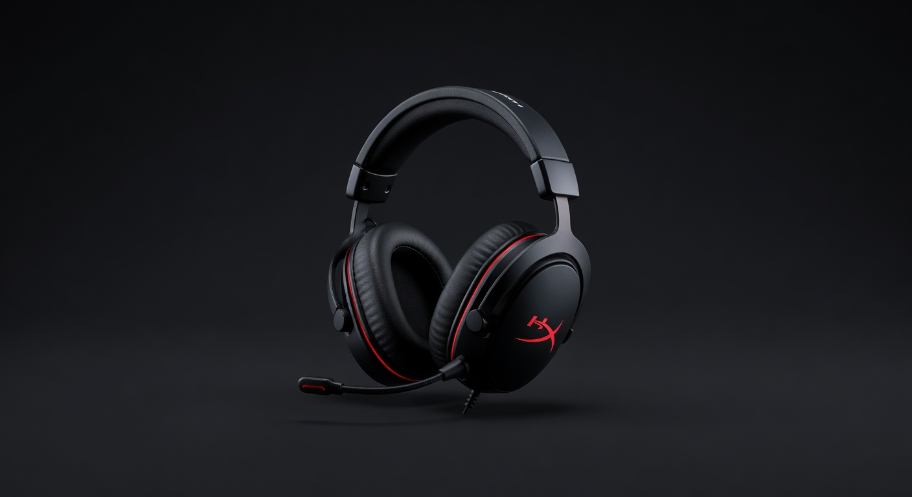
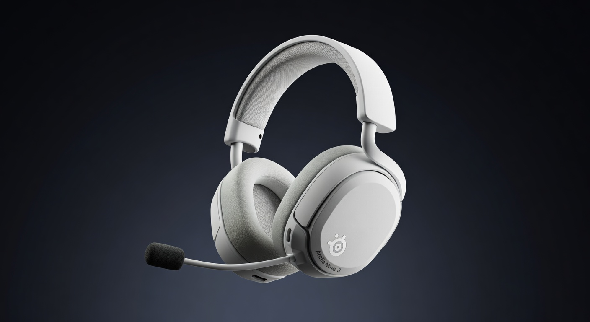

As an Amazon Associate I earn from qualifying purchases. Links below may earn us a commission at no extra cost to you.
HyperX Cloud Stinger vs SteelSeries Arctis Nova 3: Is the Upgrade Worth $50 More?
These are the two headsets we recommend most often in the under-$100 tier — and the question we get asked constantly is whether the Arctis Nova 3 at ~$99 is worth the extra $50 over the Cloud Stinger at ~$49. The honest answer depends entirely on what you care about. Here's the complete breakdown.

HyperX Cloud Stinger
~$49
VS

SteelSeries Arctis Nova 3
~$99
Quick Verdict
Arctis Nova 3 wins — but the Cloud Stinger earns its price
The Arctis Nova 3 is the better headset by a clear margin: wider soundstage, significantly better microphone, and 7.1 virtual surround. But if you're on a tight budget or primarily play on console, the Cloud Stinger at $49 is a genuinely good headset that doesn't embarrass itself. The upgrade is worth it if the mic matters to you even a little bit.
Head-to-Head: Category by Category
Sound Quality
Arctis Nova 3
The Nova 3's drivers deliver a noticeably wider soundstage — you can tell where footsteps are coming from in ways the Cloud Stinger can't match. The Cloud Stinger has decent audio for its price but sounds slightly compressed and narrow by comparison. Not a huge gap for casual play, but real in competitive scenarios.
Microphone
Arctis Nova 3 — clearly
The ClearCast bi-directional microphone in the Nova 3 is one of the best mics under $150 — background noise rejection is excellent and voice clarity is genuinely impressive. The Cloud Stinger's swivel mic is functional but sounds thin and tinny. If you play with a team or stream, this difference alone justifies the $50 gap.
Comfort
Arctis Nova 3
SteelSeries' ski-goggle headband design distributes weight differently than a standard foam headband — it's unusually comfortable for hours of wear. The Cloud Stinger's foam headband is fine but can cause mild fatigue after 3+ hours. Both are lightweight; the Nova 3 just sustains comfort longer.
Platform Compatibility
Cloud Stinger
The Cloud Stinger works on PC, PS5, Xbox, Nintendo Switch, and mobile via 3.5mm — no dongles, no software required. The Nova 3 also supports multiple platforms but requires a USB-C connection for 7.1 surround, and the software experience on some consoles is more limited. Edge to Cloud Stinger for plug-and-play simplicity.
Features
Arctis Nova 3
The Nova 3 adds 7.1 virtual surround (via SteelSeries Sonar app), more EQ customization, and a better-built physical mic retraction mechanism. The Cloud Stinger's swivel mute is clever for its price but less refined. The Nova 3 simply offers more.
Value for Money
Cloud Stinger
At $49, the Cloud Stinger punches well above its price class — you're getting 50mm drivers and solid build quality for less than a good pizza order. The Nova 3 at $99 is also excellent value, but the Cloud Stinger's ratio of quality-to-dollar is hard to beat at the entry tier.
Spec Comparison
| Spec | HyperX Cloud Stinger | SteelSeries Arctis Nova 3 |
|---|---|---|
| Price | ~$49 | ~$99 |
| Driver Size | 50mm | Nova Acoustic 40mm |
| Connection | 3.5mm / USB | USB-C / 3.5mm |
| Microphone | Swivel-to-mute cardioid | ClearCast bi-directional |
| Surround Sound | No | 7.1 via Sonar (PC) |
| Weight | 275g | 258g |
| Platforms | PC, PS5, Xbox, Switch, Mobile | PC, PS5, Switch, Mobile |
| Software | None required | SteelSeries Sonar (optional) |
Which Should You Buy?
HyperX Cloud Stinger
~$49
Best for: Tight budget · Console gamers · Casual solo play
🛒 Check Price on Amazon
Full Review →
SteelSeries Arctis Nova 3
~$99
Best for: PC gamers · Team play · Mic quality matters
🛒 Check Price on Amazon
Full Review →
More Headset Comparisons & Guides
Frequently Asked Questions
For casual-to-moderate competitive play, yes. The Cloud Stinger's 50mm drivers give you positional audio that's adequate for most games. Where it starts to fall short is in games where precise footstep and directional audio at range matter — FPS titles at a serious competitive level benefit from the wider soundstage of the Nova 3. For most gamers, the Cloud Stinger is fine.
The SteelSeries Arctis Nova 3 — it's not close. The ClearCast bi-directional microphone is one of the best in the under-$150 category. Your teammates will be able to hear you clearly with minimal background noise. The Cloud Stinger's mic is functional but sounds noticeably thinner and picks up more ambient noise. If you play with others and sound quality matters, this is the deciding factor.
The Arctis Nova 3 works on Xbox via the 3.5mm connection for basic audio and chat. The USB-C connection and 7.1 virtual surround are PC-only features. If Xbox is your primary platform and you want the full feature set, the Cloud Stinger's broader compatibility without software dependencies is an advantage.
The HyperX Cloud Stinger is the best gaming headset under $50. It has reliable 50mm drivers, lightweight steel frame construction, and a swivel-to-mute microphone — all for $49. At this price tier there are few serious competitors. If you can stretch to $99, the Arctis Nova 3 is a significant upgrade; otherwise the Cloud Stinger is the right call.
Affiliate Disclosure: As an Amazon Associate I earn from qualifying purchases. Prices may vary.